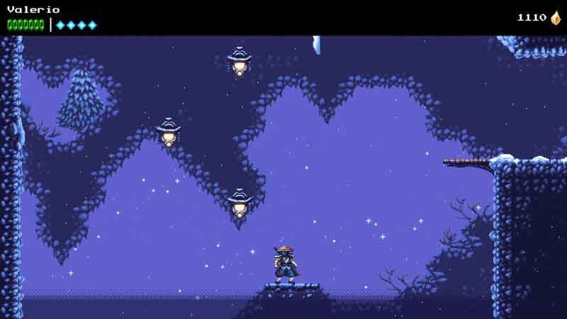
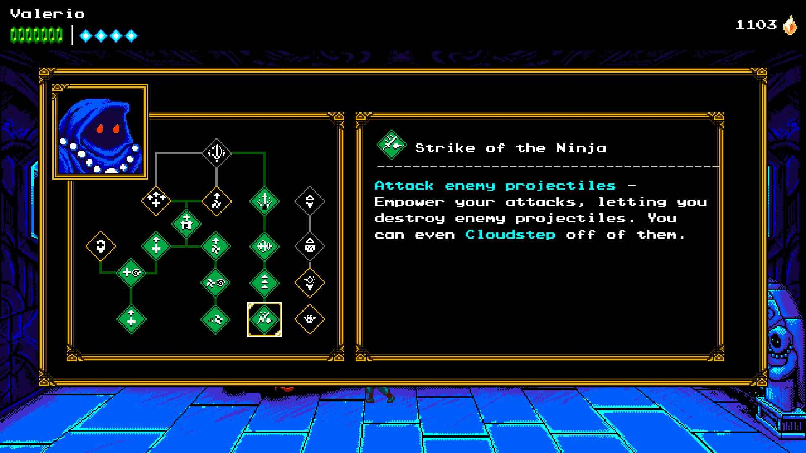
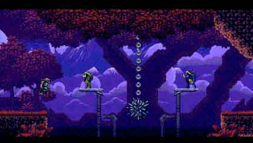
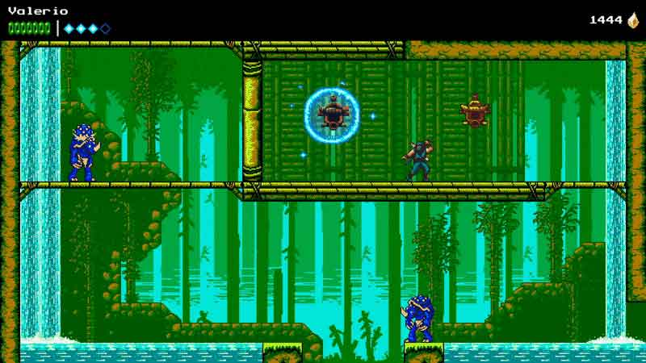
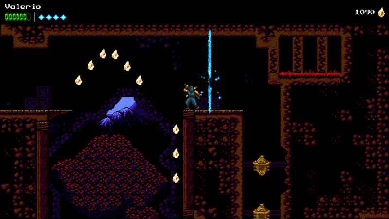

The Messenger
Action-Platformers are one of my favourite genres and The Messenger is definitely in my personal Top 5 of those released in the last few years.
The Messenger was developed by the talented Sabotage Studio and published by Devolver Digital and is clearly inspired by the classic Ninja Gaiden. The strong aspect of the game is its gameplay. In this kind of productions, the commands need to be fast and precise and The Messenger excels in this aspect. Our character always performs his actions with absolute precision, the hit-boxes of the enemies are always accurate, and the game has the right pace and rhythm.
The Cloudstep is the heart mechanic of the gameplay and consists of a series of multiple jumps that can be performed only after hitting objects or enemies in mid-air. This mechanic alone makes the exploration interesting and never banal, as it forces the player to learn to alternate jumps and attacks, with the right precision and the right timing. There are also other mechanics such as the use of the rope dart, the ability to climb and to glide that progressively increase the complexity in both the platforming and fighting aspect of the game.
 On our path we will earn the Fragments of Time that can be used to buy skills and upgrades, such as additional life energy, a skill to deflect the enemy attacks and more. Personally, I would have preferred a slightly bigger depth of this aspect since I have purchased almost all of the available skills shortly after the middle of the game. However, all the upgrades are somehow useful and I found myself using pretty much all of them.
The difficulty is well balanced with some sporadic peak of difficulty, but the game is never too punitive. The veterans of the genre will find in The Messenger a pleasant and stimulating challenge. Novices instead will find it a bit tougher, but they will not find anything insurmountable or that can ruin the general experience.
Keeper of the Scroll
The game is set in a world where the human race has been annihilated by the army of demons. The few survivors live in a village where they train to become ninjas. They wait for the fulfilment of a prophecy that sees the return of the army of demons and the arrival of a legendary hero called "Western Hero". In the day of their arrival our the story begins. The Western Hero who has come to help the village against the demons gives a Scroll to our protagonist, one of the village ninjas, assigning him an important mission: to become the Messenger who must deliver the Scroll to the top of the Ice Peak mountain.
The adventure of our ninja will lead him to meet the sages on the top of the mountain, to travel to a future 500 years away and face the King of Demons. The game is divided into two parts. In the first one, we will progress linearly in both the story and the exploration of the different areas of the game. In the second part, The Messenger turns into a Metroidvania: we will have access to a central hub from which we can do some backtracking. Thus we can complete the quests necessary to get to the end of the game and/or get all collectables.
Also, in the second part, the world will undergo variations: there will be some temporal fractures that will give a further twist to the platform phases. These will turn into a kind of puzzle where we will use the fractures to travel back and forth in time to change the scenario and get to previously unreachable areas.
Aspect and visual
I loved the graphics of The Messenger. The present is in 8-bit Nintendo style graphics while the future is in 16-bit Super Nintendo style. I particularly appreciated the aspect of the scenarios that are really well designed and pleasant to see. They have also a good variety that goes from a verdant jungle to a snowy mountain, or from inside a volcano to a submerged temple.
The soundtrack, composed by Rainbowdragoneyes, is absolutely stellar and is perfectly in line with the other aspects of the game. Personally, I appreciated it so much that I included it in my playlist and I'm still listening to it today, several months after I finished the game. The thing that I liked more about the soundtrack is the fact that is created with the present-future dualism in mind. In fact, the tracks of the present timeline are in 8-bit style, while the future timeline ones are in 16-bit style.

Final Thoughts
Sabotage Studios have been incredibly good in creating a modern and fresh experience in a beautiful retro style. The precise and challenging gameplay, combined with pleasant graphics and a fantastic soundtrack, make The Messenger a small masterpiece that cannot be missed by anyone who loves this genre.
V-SCORE 8.5